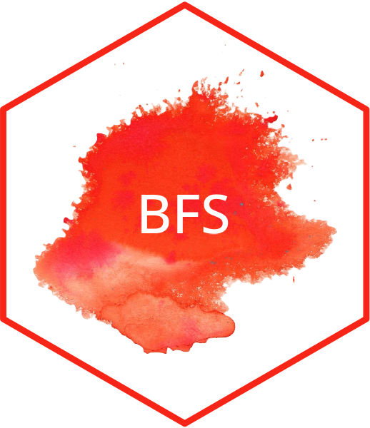

Changelog
Source:NEWS.md
BFS 0.5.2
- BREAKING CHANGE:
bfs_get_catalog_data()andbfs_get_catalog_tables()return now in the dataframe “number_asset” instead of “guid” as variables. - add
bfs_download_asset() - add
bfs_get_asset_metadata() - “number_bfs” as first argument in
bfs_get_metadata() - improve docs
BFS 0.5.1
CRAN release: 2023-06-08
- BREAKING CHANGE: fix BFS version 0.5 broke
bfs_get_data(). Fix now #10 by removing “all” default argument toquery.
BFS 0.5
CRAN release: 2023-06-08
- fix bug #10
- add
bfs_get_catalog_geodata() - add
bfs_download_geodata() - improve docs
BFS 0.4.8
CRAN release: 2023-05-31
- BREAKING CHANGE: reorder arguments in functions for consistency
-
bfs_get_catalog_tables()now gets full catalog, fixing #5 -
bfs_get_catalog_tables()has new functions to filter datasets directly - use “httr2” instead of “jsonlite” for better console messages
- improve README, docs and sticker.
BFS 0.4.7
CRAN release: 2023-05-19
- add new function
bfs_get_metadata() - fix bug duplicated column names with
as_tibble(. .name_repair = "minimal")
BFS 0.4.5
CRAN release: 2023-02-27
- Fix bug in
bfs_get_data_comments()#8. - improve README by adding info about dependencies.
BFS 0.4.4
CRAN release: 2022-12-14
- Fix bug using
queryargument inbfs_get_data() - remove depreciated function
bfs_get_metadata()andbfs_get_dataset()
BFS 0.4.3
CRAN release: 2022-09-07
- Fixed
bfs_get_catalog_data()andbfs_get_catalog_tables()bug #6. - tidyRSS GitHub dependency version is 2.0.5.
- Add tests for
bfs_get_catalog_*functions.
BFS 0.4.2
- Fixed
bfs_get_catalog_data()andbfs_get_catalog_tables()bug #6. - tidyRSS dependency version is 2.0.4.
- Improved README.
BFS 0.4.1
CRAN release: 2021-10-09
- BREAKING CHANGE:
clean_namesofbfs_get_data()is now FALSE by default. -
bfs_get_data()uses BFS API v1. -
bfs_get_metadata()deprecated. Please use onlybfs_get_catalog_data(). - add
bfs_get_catalog_tables(). - add
bfs_get_catalog(). - pxweb and jsonlite dependency added. dplyr dependency removed.
BFS 0.3.0
CRAN release: 2021-03-23
- fix critical bug in
bfs_get_dataset() - add new function
bfs_get_catalog()
BFS 0.2.6
- Added a
NEWS.mdfile to track changes to the package. - Added
bfs_get_catalog()function, that scraps the RSS feed